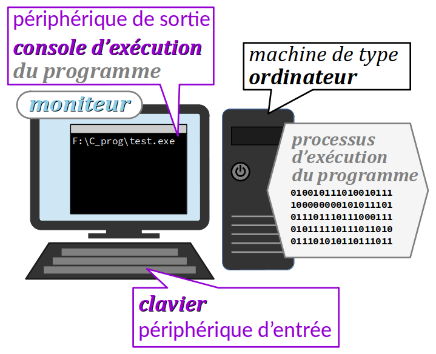
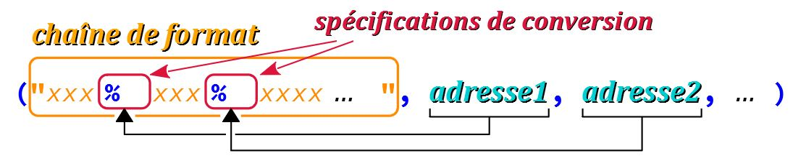

En programmation, on appelle entrées‑sorties W – en anglais, input‑output, termes abrégés par le sigle IO – les échanges de données entre :
- la machine – au sens large, il peut s'agir d'un ordinateur, d'une carte à microcontrôleur, etc. – sur laquelle s'exécute le programme ;
- et des périphériques de cette machine – au sens large également (écran, clavier, imprimante, disque… W).
Si la machine est un ordinateur de type poste de travail et si les périphériques sont respectivement :
- pour l'affichage de données (périphérique de sortie), une fenêtre du moniteur, dite console d'exécution du programme,
- pour la saisie de données (périphérique d'entrée), le clavier principal de la machine,
alors on parle d'entrées‑sorties standards.
Même dans ce cadre restreint apparemment simple (il n'est pas question ici ni de souris, ni d'affichage graphique), les opérations d'entrées‑sorties standards sont très complexes. Elles mettent en œuvre des objets « cachés » (des mémoires tampons, en anglais buffers) avec de nombreux paramètres et font appel à des dispositifs spécialisés (des circuits intégrés) en interaction avec le système d'exploitation de la machine.
Peu visibles au premier plan des interfaces homme‑machine W des logiciels récents, qui opèrent plutôt via des interfaces graphiques, les entrées‑sorties standards sont néanmoins essentielles dans l'apprentissage de la programmation pour deux raisons :
- elles restent très utilisées pour la mise au point et l'installation des programmes (en particulier sous un système d'exploitation comme Linux),
- elles constituent la base des méthodes de lecture & écriture sur fichiers, des opérations très fréquentes en informatique, qui seront étudiées au chapitre C5‑VIII.
Dans un objectif d'initiation minimale, après avoir exposé quelques généralités incontournables, ce chapitre ne donne qu'un premier aperçu des deux fonctions d'entrées‑sorties standards les plus usuelles en langage C :
-
printfpour les sorties standards formatées (affichage de message et de données sur le terminal d'exécution) ; -
scanfpour les entrées standards formatées (saisies de données par le clavier) ;
le but étant simplement de pouvoir coder un minimum d'interactions de l'utilisateur avec les programmes au cours de leur exécution. En plus des règles élémentaires de syntaxe, de nombreux exemples sont proposés. Ils ont tous été testés dans l'environnement OnlineGDB (chaîne de compilation GCC).
Généralités
Variété des syntaxes d'entrées‑sorties
Les langages C et C++ emploient des syntaxes très différentes pour les opérations d'entrées‑sorties standards. De plus, leur étude détaillée n'est pas envisageable dès maintenant , car ces opérations font appel à des concepts avancés (pointeurs, flots…).
Par ailleurs, afin d'éviter les confusions chez les codeurs débutants, dans ce module de formation, seules les fonctions d'entrées‑sorties du langage C seront abordées, et pas celles du C++. En effet, dans ce langage, on utilise le module de bibliothèque iostream, comme dans le programme Hello world (cf. TP C1‑1 ) :
#include <iostream>
int main() {
std::cout << "Hello World!" << endl;
return 0;
}
Mais dans un premier temps, ces éléments de langage ne sont pas indispensables car même en C++, il est parfaitement possible d'employer les fonctions du langage C – à condition d'inclure le fichier d'en‑tête cstdio de la bibliothèque standard (cf. infra).
Enfin, les entrées‑sorties par moniteur série avec les cartes Arduino seront étudiées au chap. C3‑X .
Le module stdio de la bibliothèque standard du langage C
En langage C, les fonctions d'entrées‑sorties standards (et aussi celles sur fichiers) sont regroupées dans un module de la bibliothèque standard dont le fichier d'en‑tête est stdio.h C.
Il faut donc coder au début du fichier source du programme la directive :
#include <stdio.h>
pour pouvoir employer ces fonctions.
Ce module comporte plusieurs dizaines de fonctions. Seules les deux plus usuelles seront présentées ci‑après :
-
printfpour les sorties avec un affichage de données sur la console, -
scanfpour les entrées avec une saisie de données au clavier.
Toutes les deux mettent en œuvre des mécanismes de formatage, d'où le suffixe « f » de leur identificateur.
Comme expliqué au chap. C2‑I , il est possible d'employer les fonctions de la bibliothèque standard du C dans un programme codé en langage C++, dont chaque module existe dans une variante adaptée. Pour exploiter les fonctions d'entrées‑sorties standards, il suffit de coder la directive :
#include <cstdio>
Notion de chaîne de caractères
En programmation, on appelle chaîne de caractère W – en anglais, string of characters, abrégé string – une suite de valeurs de caractères – a priori, n'importe quels symboles, y compris des caractères de contrôle comme HT (tabulation horizontale), CR (retour chariot), LF (nouvelle ligne)… cf. chap. C3‑VIII .
Cette suite de caractères forme conjointement, dans leur ordre donné, une valeur particulière d'un type de donnée reconnu comme tel et nommé le plus souvent string.
À cette définition déjà loin d'être simple s'ajoute la difficulté sous‑jacente que le nombre de caractères d'une chaîne – on dit sa longueur – est a priori variable durant l'exécution du programme, ce qui augure des problèmes d'allocation mémoire nécessaire à son stockage.
C'est pourquoi la notion de chaîne de caractères n'est pas détaillée maintenant, mais beaucoup plus loin dans ce module (cf. chap. C5‑VI ).
Néanmoins, il est indispensable de disposer dès à présent de quelques connaissances sur cette notion, car les fonctions d'entrées‑sorties printf et scanf déclarées dans le fichier d'en‑tête stdio.h admettent comme premier argument un objet de ce type.
Rudiment de syntaxe des chaînes de caractères en langage C
Dans le noyau du langage C, il n'y a pas de type dénommé string. On emploie à la place :
- soit un tableau de caractères (typiquement,
char[]– cf. chap. C5‑III ) ; - soit un pointeur sur caractères (typiquement,
char *– cf. chap. C5‑I ).
On parle de chaîne de « style C » – C‑style string en anglais W.
Quant aux constantes littérales chaînes de caractères, elles sont codées en C et en C++ entre une paire de délimiteurs "" dits doubles guillemets droits ou encore guillemets dactylographiques W (double quotation marks, abrégé double quotes en anglais). Il en est de même dans la plupart des langages de programmation.
Implicitement, une constante littérale chaîne de caractères codées ainsi comporte toujours un caractère de plus à la fin qui est toujours le caractère NUL W. Il s'agit d'un caractère spécial :
- sans glyphe (pas de symbole affiché) ;
- à valeur entière
0(aussi bien en code ASCII ou en UTF‑8).
Il signale la fin de la chaîne – en anglais, on parle de null‑terminated string W.
-
"Hello"code une constante littérale formant une chaîne de 5 + 1 caractères. -
"x"code une constante littérale formant une chaîne de 1 + 1 caractères – à ne pas confondre avec'x'qui est une valeur de caractère isolé (cf. chap. C3‑VIII ). -
""code une constante littérale qui est la « chaîne vide », mais qui comporte en fait 1 caractère – le caractère NUL. - L'instruction ci‑dessous est la déclaration d'une chaîne de type tableau :
char endingMessage[20] = "Good bye!";
20) pour d'éventuelles modifications de la variable avec un contenu ultérieur qui serait plus long. La fonction d'affichage printf
Syntaxe d'appel
En langage C, un affichage formaté sur la console d'exécution du programme se code par une expression d'appel de la fonction printf, avec la syntaxe suivante :
printf(chaîne de format [,
expression 1,
expression 2,
…,
expression n ])
sachant que printf retourne une valeur de type int (le nombre de caractères affichés – valeur qui peut être exploitée pour gérer des scénarios limites).
Dans cette syntaxe, on peut apporter les précisions suivantes :
- La chaîne de format code la trame de la chaîne de caractères à afficher. Elle peut être :
- une expression dont la valeur est une chaîne de caractères – cette possibilité ne sera pas décrite dans ce chapitre (cf. chap. C5‑VI ) ;
- une suite de caractères saisie entre guillemets doubles
"", a priori composée de caractères ASCII (cf. chap. C3‑VIII ) voire UTF‑8 (cf. chap. C3‑IX ) selon l'implémentation ; - et optionnellement assortie de n spécifications de conversion, chacune préfixée par le symbole
%. - À chaque spécification de conversion doit correspondre une et une seule expression respectivement dans l'ordre de codage après la chaîne de format. Chacune doit :
- être évaluable au moment du traitement de l'instruction,
- être compatible en termes de typage à sa spécification de conversion correspondante.
Des exemples sont données infra , après le détail de la syntaxe des spécifications de conversions.
Syntaxe de codage des spécifications de conversion
Le codage des spécifications de conversion obéit à une syntaxe complexe qu'il n'est pas question de détailler complètement dans ce chapitre d'introduction.
Une spécification de conversion est un élément de code dans une chaîne de format qui détermine la présentation de la valeur de son expression correspondante, avec laquelle existe toujours une contrainte de typage.
Elle est constituée du préfixe % suivi d'une séquence de caractères codes.
Les quelques caractères codes de formatage basique sont détaillés dans le tableau ci‑dessous. Ils sont valables aussi bien pour les appels des fonctions printf et scanf. Pour tout complément, on pourra se référer à cette page web de référence C.
| Caractère code |
Types requis |
Format d'affichage |
Mnémonique |
|---|---|---|---|
d ou i |
entiers signés | valeur en base 10 | decimal integer |
u |
entiers non signés | valeur en base 10 | unsigned |
x |
entiers | valeur en base 16 | hexadecimal |
g |
décimaux (flottants) | valeur décimale, format le plus court | general |
f |
décimaux (flottants) | valeur décimale, virgule fixe | fixed point |
e |
décimaux (flottants) | valeur décimale, virgule flottante | exponent |
c |
int |
valeur de caractère | character |
s |
char* |
chaîne de caractères | string |
p |
pointeurs | adresse hexadécimale | pointer |
- On peut facilement afficher diverses présentations d'une même valeur entière :
-
printf("%d", 65);affiche65
(valeur en base 10) ; -
printf("%x", 65);affiche41
(valeur en base 16 – en effet, 65 = 4 × 16 + 1) ; -
printf("%c", 65);afficheA
(car 65 est le code ASCII de la lettre « A » – cf. chap. C3‑VIII ). - On peut facilement afficher diverses présentations d'une même valeur décimale :
-
printf("%g", 12.3);affiche12.3
(notation optimisée) ; -
printf("%f", 12.3);affiche12.300000
(notation à virgule fixe avec par défaut 6 décimales) ; -
printf("%e", 12.3);affiche1.230000e+01
(notation exponentielle). - On peut afficher une chaîne de caractères directement ou indirectement :
-
printf("Hello!");afficheHello!
(codage direct) ; -
printf("%s", "Hello!");afficheHello!
(codage indirect) ;
Il n'existe pas de spécification de conversion qui permettent d'afficher en base 2 la valeur d'une expression de type entier.
Prise en compte de la taille du type de l'expression à afficher
La spécification %d est polyvalente pour les expressions de types entiers qui entrent dans l'étendue des valeurs du type standard int – autrement dit, pour des expressions de type short ou char.
Il en va de même pour les spécifications %g, %f et %e qui sont compatibles avec toutes les expressions de types décimaux qui entrent dans l'étendue du type double – autrement dit, celles de type float.
Mais lorsque l'expression à afficher est d'un type plus grand que int (cf. chap. C3‑II ) ou double (cf. chap. C3‑V ), il est nécessaire d'ajouter d'autres caractères codes à la spécification de conversion pour qu'elle soit compatible avec toutes les valeurs de l'expression. On code comme indiqué dans le tableau ci‑dessous .
| Spécification de conversion |
Type de l'expression |
|---|---|
%ld |
long |
%lu |
unsigned long |
%lld |
long long |
%llu |
unsigned long long |
%Lg ou %Lf ou %Le |
long double |
Sur un PC Windows avec la chaîne de compilation Mingw‑w64, les fonctions d'entrées‑sorties sont implémentée par une ancienne bibliothèque du logiciel d'exécution (run‑time), basée sur une architecture 32 bits. Il en résulte que dans cet environnement, certaines spécifications de conversion ne sont pas reconnues, avec éventuellement une alternative :
-
%lldet%lludoivent être respectivement remplacées par%I64det%I64u; -
%Lg,%Lfet%Len'ont pas d'alternative.
Par ailleurs, on peut forcer une conversion dans un type entier de taille plus petite que celui de l'expression correspondante – avec à la clef un éventuel rebouclage cyclique – en codant les spécifications conformément au tableau ci‑dessous.
| Spécification de conversion |
Type forcé |
|---|---|
%hhd |
char |
%hhu |
unsigned char |
%hd |
short |
%hu |
unsigned short |
-
printf("%hhd", 200);affiche-56
(valeur déterminée par rebouclage cyclique dans le typechardont l'étendue est {−128, +127}) ; - alors que
printf("%d", 200);affiche200normalement.
Prise en compte des types non signés
La spécification %u est nécessaire pour toute expression de type unsigned int ou plus grand. Sinon, l'affichage de sa valeur sera non conforme (avec un rebouclage cyclique) dès qu'elle dépasse la borne supérieure INT_MAX (cf. chap. C3‑II ).
Après la déclaration unsigned a = 3000000000; on constate que :
-
printf("%d", a);affiche-1294967296
(valeur non conforme à celle dea) ; -
printf("%u", a);affiche3000000000
(valeur conforme à celle dea).
Contrôle de l'espacement d'affichage
Dans une spécification de convertion, on peut imposer le nombre de caractères comme un cadre dans lequel la valeur de l'expression correspondante doit s'inscrire. En anglais, on parle de padding.
Ce nombre de caractères se code juste après le préfixe %.
Par défaut, la valeur est alignée à droite dans le cadre ainsi spécifié. Et si la taille de ce dernier est insuffisante, la valeur n'est pas tronquée mais déborde du cadre.
Pour imposer un alignement à gauche, il suffit de coder le symbole - juste avant le nombre de caractères du cadre dans la spécification de conversion.
-
printf("%4d", 1);affiche1
(alignement de la valeur à droite dans un cadre de 4 caractères) ; -
printf("%-4d", 1);affiche1
(alignement de la valeur à gauche dans un cadre de 4 caractères) ; -
printf("%4d", 12345);affiche12345
(débordement du cadre de 4 caractères).
Affichage de zéros non significatifs
Dans une spécification de conversion alignée à droite avec un cadre suffisamment grand, on peut imposer l'affichage de 0 non significatifs sur tous les caractères vacants du cadre à gauche de la valeur.
Il suffit de coder le chiffre 0 juste avant le nombre de caractères du cadre dans la spécification de conversion.
Dans un cadre de 3 caractères :
-
printf("%03d", 9);affiche009
(deux «0» non significatifs car la valeur s'affiche sur 1 caractère) ; -
printf("%03d", 98);affiche098
(un «0» non significatif car la valeur s'affiche sur 2 caractères) ; -
printf("%03d", 987);affiche987
(aucun «0» non significatif car la valeur s'affiche sur 3 caractères).
Affichage des valeurs décimales
Ce point n'est abordé qu'au chapitre C3‑V avec l'étude des types décimaux .
Codage de quelques caractères spéciaux
Certains caractères spéciaux ou particuliers du jeu ASCII peuvent être inclus dans la chaîne de format via une lettre-code préfixée par le symbole \ formant ce qu'on appelle une séquence d'échappement (cf. chap. C3‑VIII ).
Les séquences d'échappement les plus usuelles sont :
-
\npour effectuer un saut de ligne (pour newline) ; -
\tpour effectuer un saut de tabulation horizontale (pour tabulation) ; -
\apour émettre un avertissement sonore (pour alert) ; -
\\pour afficher le caractère «\» ; -
\"pour afficher le caractère «"» ; -
\'pour afficher le caractère «'».
Par ailleurs, dans la chaîne de format, il faut coder %% et non pas \% pour afficher une occurrence du caractère « % » dans la console d'exécution.
En effet, cette syntaxe spécifique est nécessaire parce que dans une chaîne de format, le caractère « % » joue un rôle particulier. En revanche, dans le codage d'une constante littérale chaîne de caractères en général, cette syntaxe spécifique ne doit pas être employée sinon elle produit deux caractères « % » de suite.
Exemples pratiques
- La célèbre instruction :
printf("Hello, World!\n");
afficheHello, World!et passe à la ligne suivante. - Après la déclaration
float nominalVoltage = 12.0;l'instruction :
printf("Unom =%gV", nominalVoltage);
afficheUnom = 12 V. - Après la déclaration
unsigned day = 1, month = 9, year = 2019;l'instruction :
printf("%02u/%02u/%u", day, month, year);
affiche01/09/2019. - Après la déclaration
int a = 15;l'instruction :
printf("%p%x", &a, a);
affiche par exemple0x7fffc2bf84a4 f.
%g associée à l'expression nominalVoltage. day, month et year qui prennent toutes les trois une valeur entière non signée. Les valeurs respectives du jour et du mois s'incrivent sur deux chiffres avec un zéro non significatif si elles sont à un chiffre comme dans l'exemple ci‑dessus. 0x7fffc2bf84a4 est l'adresse de la variable déclarée a, le second f est la valeur hexadécimale stockée à cette adresse (en effet, 15 s'écrit « f » ou « F » en base 16). %p et %x associées respectivement aux expressions &a (adresse de a) et a (valeur de a). La fonction de saisie scanf
Bien qu'elle opère en sens inverse dans l'interface homme‑machine, la fonction scanf partage de nombreux aspects syntaxiques communs avec la fonction printf.
En revanche, la fonction scanf présente une spécificité remarquable : son traitement déclenche la mise en pause de l'exécution des instructions du programme, dans l'attente d'une saisie de l'utilisateur suivi d'une validation sur la touche « ENTRÉE ↲ »
Syntaxe d'appel
En langage C, une saisie formatée depuis le clavier principal de la machine se code par une expression d'appel de la fonction scanf, avec la suivante :
scanf(chaîne de format [,
adresse 1,
adresse 2,
…,
adresse n ])
sachant que scanf retourne une valeur de type int (le nombre de caractères saisis – valeur qui peut être exploitée pour gérer des scénarios limites).
Dans cette syntaxe, on peut apporter les précisions suivantes :
- La chaîne de format est la chaîne de caractères codant un formulaire de saisie. Elle chaîne peut être :
- une expression dont la valeur est une chaîne de caractères – cette possibilité ne sera pas décrite dans ce chapitre (cf. chap. C5‑VI ) ;
- une suite de caractères saisie entre guillemets doubles
""a priori composée de caractères ASCII (cf. chap. C3‑VIII ) voire UTF‑8 (cf. chap. C3‑IX ) selon l'implémentation ; - et optionnellement assortie de n spécifications de conversion, chacune préfixée par le symbole
%; - À chaque spécification de conversion doit correspondre une et une seule adresse de variable dont le type est compatible avec sa spécification correspondante. Le plus souvent, une telle adresse est codée de la forme :
&identificateur de variable
mais elle peut aussi être codée par un identificateur de pointeur sur une variable déclarée – c'est notamment le cas pour une chaîne de caractères – ou plus généralement une expression dont la valeur est l'adresse d'une variable déclarée (la notion de pointeur est étudiée à partir du chap. C5‑I ).

Codage des spécifications de conversion
Dans un appel de la fonction scanf, la syntaxe de codage des spécifications de conversion obéit à des règles similaires à celles exposées supra pour la fonction printf .
Toutefois, une différence importante est l'exigence de compatibilité de taille et de signe stricte entre la spécification et le type de la variable affectée.
En effet, alors qu'il est possible via printf d'afficher avec la spécification %d des valeurs entières indifféremment de type char ou short ou int, il n'est pas possible de procéder de même avec scanf pour la saisie de valeurs de variables de ces types. Il faut respectivement coder la spécification de conversion :
-
%hhdpour une variable de typechar; -
%hdpour une donnée de typeshort; -
%dpour une donnée de typeint;
De même, si l'on veut coder la saisie d'une variable d'un type entier non signé – unsigned char, etc. – il faut employer le même genre de spécification de conversion mais avec la lettre‑code u.
Par ailleurs, les spécifications %g, %f et %e sont indifférentes pour la saisie de valeurs décimales mais il faut obligatoirement coder la spécification de conversion :
-
%gpour une variable de typefloat; -
%lgpour une variable de typedouble; -
%Lgpour une variable de typelong double.
Comme avec la fonction printf (cf. supra ), on rencontre des difficultés sur un PC Windows avec la chaîne de compilation Mingw‑w64) pour coder la saisie d'une valeur numérique pour une variable de type char (ou unsigned char). En effet, les spécifications de conversion %hhd et %hhu ne sont pas prises en charge.
Deux palliatifs sont alors envisageables :
- On peut saisir la valeur dans une variable intermédiaire de type standard
intavec la spécification de conversion%dpuis coder une affectation à la variable de typechardont on cherche à saisir la valeur. Si la valeur saisie est comprise dans l'intervalle de ce type, la conversion implicite prévue par le compilateur n'engendrera aucune perte de donnée. - On peut aussi recourir à un type entier à largeur spécifiée comme
int8_touuint8_t(cf. chap. C3‑II ) et une spécification de conversion appropriée, définie dans le fichier d'en‑têteinttype.hC.
Emploi des séquences d'échappement dans la chaîne de format
Comme pour la fonction prinft, l'emploi de séquences d'échappement est possible dans la chaîne de format d'un appel de la fonction scanf. Toutefois, un tel usage est rarement nécessaire (cf. les exemples infra ).
Exécution d'un appel
L'exécution d'un appel de la fonction scanf est particulièrement complexe. Il est ici seulement question d'en esquisser le principe.
L'exécution d'une instruction d'appel de la fonction scanf se déroule aussi longtemps que nécessaire, tant que n'a pas été saisi le dernier caractère de validation (généré par appui sur la touche « ENTRÉE ↲ ») requis par la chaîne de format codée dans l'appel (premier argument).
Durant cette exécution, une séquence des caractères tapée au clavier n'est validée qu'après appui sur la touche « ENTRÉE ↲ » du clavier. Avant cet appui, il est possible de modifier la saisie grâce aux touches de déplacement du curseur et la touche « effacer ← ». En temps réel, la saisie est retranscrite (affichée) dans la console d'exécution.
Une validation entraîne la copie des caractères saisis – y compris les caractères associés à la touche « ENTRÉE ↲ » (la séquence newline) – dans un espace mémoire tampon appelé buffer d'entrée.
La fonction scanf opère alors une analyse lexicographique du contenu du buffer d'entrée pour identifier les éléments attendus conformément à la chaîne de format et aux spécifications de conversions. Au fur et à mesure, les données saisies sont copiées aux adresses spécifiées et les caractères de formatage sont « ignorés ».
Et tant que la dernière spécification de conversion n'a pas reçu de valeur, le processus d'exécution reste suspendu à une nouvelle saisie suivie d'une validation – cf. notamment les exemples 2) et 3) ci‑après.
Quelle que soit la chaîne de format codée, l'exécution d'un appel de scanf n'affiche rien d'autre que les caractères saisis par l'utilisateur – et donc, aucun des caractères codés dans la chaîne de format.
Si l'on souhaite afficher un message pour guider l'utilisateur du programme dans sa saisie au clavier, il faut coder préalablement l'affichage de message, notamment à l'aide de la fonction printf.
Exemples
- L'instruction toute simple :
scanf("_");
a juste pour effet de suspendre une fois l'exécution du programme jusqu'à ce que l'utilisateur appuie sur la touche « ENTRÉE ↲ ». - Après la déclaration
int a, b;l'expression :
scanf("%d%d", &a, &b)
suspend l'exécution du programme jusqu'à ce que l'utilisateur ait : - saisi deux valeurs entières éventuellement signées (conformément aux deux spécification de conversion
%d), séparées par n'importe quelle séquence de caractères d'espacements (« espaces », « sauts de tabulations » générés par la touche « TAB ↹ » et même un « saut de ligne » généré par la touche « ENTRÉE ↲ »), - puis tapé sur la touche « ENTRÉE ↲ ».
- Après la déclaration
unsigned day, month, year;l'instruction :
scanf("%u/%u/%u", &day, &month, &year);
suspend l'exécution du programme jusqu'à ce que l'utilisateur ait : - saisi trois valeurs entières non signées (conformément aux trois spécification de conversion
%u) obligatoirement séparées les unes des autres par des caractères «/», - puis tapé sur la touche « ENTRÉE ↲ ».
- Après la déclaration
float lowVoltage;l'expression :
scanf("%f", &lowVoltage)
suspend l'exécution du programme jusqu'à ce que l'utilisateur ait : - saisi une valeur numérique quelconque (avec éventuellement un signe, un point décimal et un exposant entier précédé du caractère
eouE, conformément à la spécification de conversion%f), - puis tapé sur la touche « ENTRÉE ↲ ».
- Après la déclaration
char message[20];l'expression :
scanf("%s", message)
suspend l'exécution du programme jusqu'à ce que l'utilisateur ait saisi une chaîne de caractères, mais sans caractères d'espacement autre qu'initiaux – lesquels sont ignorés. En effet, après un premier mot saisi, tout caractère d'espacement est interprété comme marquant la fin de la chaîne. De plus, il n'est pas possible de saisir des séquences d'échappement.
_ » n'est pas affiché ; à sa place, n'importe quel autre caractère (sauf un caractère « espace », un « saut de tabulation » ou un « saut de ligne ») aurait pu être codé dans la chaîne de format. 3 ↲ 5 ↲ mais aussi 3 5 ↲ pour achever l'évaluation de l'expression supra. Les deux valeurs entières 3 et 5 sont alors mémorisées dans l'ordre respectivement aux adresses des variables déclarées a et b. 1/9/2019 ↲ pour achever l'évaluation de l'expression supra. Il ne peut insérer aucun espace ni aucun autre caractère symbolique dans cette saisie. day, month et year. scanf la saisie de plusieurs données, l'ajout de caractères particuliers entre les spécifications de conversion dans une chaîne de format (ici, les séparateurs « / ») n'a guère d'intérêt. Cette pratique complique inutilement la saisie, aussi est‑il préférable de coder une chaîne de format plus simple, comme "%u %u %u" pour cet exemple. Quant à la vérification que les valeurs saisies sont conformes aux usages, elle nécessite dans tous les cas un algorithme spécifique (boucle avec tests conditionnels). fscanf dont la syntaxe d'appel est similaire à celle de scanf (cf. chap. C5‑VIII ). Ces caractères de formatage sont ignorés lors de la lecture par la fonction scanf. 12.3 ↲ pour achever l'évaluation de l'expression supra. Il peut éventuellement insérer des espaces avant la valeur mais aucun caractère qui ne serait pas conforme à la syntaxe de codage d'une valeur décimale. lowVoltage. lowVoltage était déclarée de type double, il serait nécessaire de coder la spécification de conversion %lf (ou %lg ou encore %le) dans l'appel de la fonction scanf. La lettre‑code l est ici indispensable, c'est l'une des petites différences avec la syntaxe de la fonction printf. Hello, world! ↲, la variable message prend seulement la valeur "Hello,". Et s'il tente de saisir Hello,\tworld! ↲, la variable message prend alors la valeur "Hello,\tWorld!" sans interpréter la séquence \t comme un saut de tabulation. scanf ne comporte pas d'opérateur d'adresse, car la variable affectée est une chaîne de caractères déclarée sous la forme d'un tableau. Son identificateur est implicitement converti en un pointeur sur le premier caractère de la chaîne (cf. chap. C5‑III ), c'est donc déjà une adresse. gets C dont l'étude est abordée au chap. C5‑VII . Les questions de débordement des valeurs saisies par rapport aux intervalles d'encodage des types de variables correspondantes se posent dans les mêmes termes que pour les fonctions d'interprétation numérique de chaînes de caractères (cf. chap. C5‑VI ).
Le problème des séquences de saut de ligne finales
Lors de l'exécution d'un appel de la fonction scanf, la séquence de caractères « newline » – qui consiste en LF, CR ou LF CR selon les systèmes d'exploitation, cf. chap. C2‑II – générée par l'appui sur la touche « ENTRÉE ↲ » validant la saisie n'est jamais incorporée à la donnée affectée, même si cette dernière est une chaîne de caractères.
Ce ou ces caractères restent stockés en tête du buffer d'entrée. Et en cas d'appel ultérieur d'une fonction d'entrée comme scanf, ils ne sont pas écrasés par les caractères saisis mais ils précèdent des derniers. En anglais, on parle de trailing newline.
Un trailing newline ne pose pas de problème si l'appel suivant de scanf code la saisie d'une valeur numérique (spécifications %d, %g, etc.) ou même d'une chaîne de caractères (spécification %s). En effet, l'algorithme d'identification (parsing) d'une telle valeur dans le buffer d'entrée met en œuvre l'élimination de tous les éventuels caractères d'espacement initiaux, y compris LF et CR.
En revanche, un problème se pose si l'appel suivant de scanf code la saisie d'un caractère (spécification %c) – le premier caractère du trailing newline est alors considéré comme celui saisi.
- Considérons le programme académique ci‑dessous qui, en boucle, attend la saisie d'une valeur entière de type
char(donc comprise entre-128et+127) et qui l'affiche, tant que cette valeur est différente de0. - En revanche, si l'on code dans le programme ci‑dessus la saisie d'une valeur de caractère, c'est‑à‑dire si l'on remplace l'instruction de la ligne n° 6 par :
#include <stdio.h>
int main(void) {
char typed = 0;
do {
scanf("%hhd", &typed);
printf("> %d\n", typed);
}
while (typed != 0);
return 0;
}
1 ↲ et 2 ↲ s'enchaînent sans problème :
1
> 1
2
> 2
...
scanf("%c", &typed);
1 ↲, on obtient en sortie standard d'un coup deux affichages consécutifs : 1 > 49 > 10
Solution
Dans la chaîne de format d'un appel de la fonction scanf, sauf si le programme doit permettre à l'utilisateur de saisir un caractère d'espacement (espace, saut de tabulation, saut de ligne) pour exprimer une réponse significative, il est recommandé de faire précéder toute occurrence d'une spécification de conversion %c par un caractère espace, comme ci‑dessous :
scanf("
%c", … )
Comme on l'a vu supra , un tel espace est interprété par le compilateur comme un caractère de formatage générique qui représente tout caractère d'espacement, y compris un « saut de tabulation » ou « saut de ligne ». Il permet donc d'ignorer un éventuel trailing newline en tête du buffer d'entrée.
Dans l'exemple 2) précédent de saisie d'un caractère en boucle, il suffit donc de coder à la ligne n° 6 :
scanf(" %c", &typed);
1 ↲ et 2 ↲, on obtient bien en sortie standard l'affichage successif des codes ASCII décimaux des caractères saisis : 1 > 49 2 > 50
Problème du trailing newline avec une instruction de « pause »
Lorsqu'un appel de la fonction scanf attend que l'utilisateur saisisse un caractère d'espacement (espace, saut de tabulation) ou simplement pour fonction de réaliser une pause d'exécution (scanf("_"), cf. supra ), la solution permettant de remédier au problème de trailing newline est inopérante.
Dans un tel cas, il n'y a pas d'autre supprimer du buffer d'entrée tout trailing newline. Avec un système d'exploitation – Linux ou Windows – où un séquence newline se termine par le caractère LF, une telle manipulation est possible en codant l'instruction :
while ((getchar()) != '\n');
Cette instruction lit tous les caractères du buffer d'entrée jusqu'à rencontrer un caractère LF. Or tout caractère lu par la fonction getchar est justement supprimé du buffer d'entrée.
Avec le programme ci‑dessous, on souhaite afficher les nombres entiers de 1 à 10 en marquant une pause pour chacun, validée par un appui sur la touche « ENTRÉE ↲ ».
#include <stdio.h>
int main(void) {
for (int i = 1; i <= 10; i++) {
printf("%d ", i);
scanf("_");
}
return 0;
}
Toutefois, lors de l'exécution, ce programme affiche bien en sortie standard le nombre 1 seul, mais juste après le premier appui sur la touche « ENTRÉE ↲ », il affiche tous les autres nombres d'un coup, comme ci‑dessous :
1 2 3 4 5 6 7 8 9 10
Le problème est dû au trailing newline qui n'est jamais évacué. Et changer l'instruction de la ligne n° 6 par scanf(" _"); ne permet pas pour résoudre le problème.
Comme expliqué supra, une solution portable mais peu lisible consiste à ajouter à la fin du bloc de la boucle for l'instruction :
while ((getchar()) != '\n');
On obtient le scénario d'exécution voulu avec la sortie ci‑dessous où les lignes sont affichées une par une après 10 appuis consécutifs sur la touche « ENTRÉE ↲ ».
1 2 3 4 5 6 7 8 9 10
Il existe également une solution plus lisible mais moins portable consiste à utiliser une fonction spécialisée comme pause qu'on trouve dans un module de bibliothèque spécifique à tel ou tel système d'exploitation.